자동차정비산업기사 (2016-05-08 기출문제)
1과목: 일반기계공학
1. 큰 토크를 전달하고자 할 때 사용하며 축과 보스에 여러 개의 홈을 동일 간격으로 만들어서 축과 보스를 끼워지도록 만든 기계 요소는?
- 스플라인
- 코터
- 리벳
- 스냅링
(정답률: 73%)

2. 기계 구조물에 여러 하중이 각각 작용할 때, 일반적으로 안전율을 가장 크게 설계해야 하는 하중의 형태는?
- 정하중
- 반복하중
- 충격하중
- 교번하중
(정답률: 83%)
3. 하이트 게이지의 사용상 주의점에 관한 설명으로 틀린 것은?
- 측정 전에 정반 표면과 하이트 게이지의 베이스 밑면을 깨끗이 닦고 측정해야 한다.
- 측정 전에 스크라이버 밑면을 정반위에 닿게 하여 0점 확인을 하며, 맞지 않을 경우 0점 조정을 하는 것이 좋다.
- 아베의 원리에 맞는 구조이므로 스크라이버를 정확히 수평으로 셋팅하는 것이 정확도를 올릴 수 있다.
- 시차를 없애기 위해서는 어미자와 버니어의 눈금이 일치하는 곳의 수평 위치에서 눈금을 읽어햐 한다.
(정답률: 74%)
4. 외접하는 마찰차의 지름이 각각 D1, D2 일 때 중심거리의 계산 공식은?
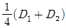
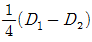
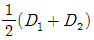
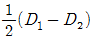
(정답률: 68%)
5. 강판 원통 내부에 내화벽돌을 쌓은 것으로서 제작이 용이하고 구조가 간단하며 일반 주철을 용해시키는 데 쓰이는 대표적인 용해로는?
- 전기로
- 도가니로
- 아크로
- 큐폴라
(정답률: 72%)
6. 아크 용접에서 모재에 (+)극, 용접봉에 (-)극을 연결하여 용접할 때의 극정은?
- 역극성
- 정극성
- 음극성
- 모극성
(정답률: 75%)
7. 다음 유압 밸브 중 유량 제어 밸브에 속하는 것은?
- 스로틀 밸브
- 릴리프 밸브
- 체크 밸브
- 언로딩 밸브
(정답률: 63%)
8. 합금강에 첨가되는 합금 원소 중 내마멸성을 증대시키고 담금질성을 높게 하는 효과가 있어 Si와 같이 탈산제로 이용되며, 특히 황에 의하여 일어나는 적열 취성을 방지하는 효과를 가진 것은?
- Cr
- Ni
- Mn
- V
(정답률: 70%)
9. 회전수 2000 rpm에서 최대 토크가 35 Nㆍm 로 계측된 축의 전달 동력은 약 몇 kW 인가?
- 7.3
- 10.3
- 13.3
- 16.3
(정답률: 35%)
10. 제품의 표면에만 내마모성을 위하여 경도를 부여하고, 제품의 내부 에는 연성과 인성을 가지도록 하기 위한 가공법은?
- 풀림
- 담금질
- 항온 열처리
- 표면 경화법
(정답률: 74%)
11. 두 축의 중심선이 평행이고 그 편심거리가 크지 않으며 교차하지 않을 때 사용되는 축 이음은?
- 유니버설 조인트
- 머프 커플링
- 세레이션 커플링
- 올덤 커플링
(정답률: 58%)
12. 다음 중 하물을 감아올릴 때는 제동 작용은 하지 않고 클러치 작용을 하며, 내릴 때는 하물자중에 의해 제동이 걸리는 브레이크에 속하는 것은?
- 원판 브레이크
- 나사 브레이크
- 밴드 브레이크
- 내부확장식 브레이크
(정답률: 60%)
13. 인발에 영향을 미치는 요인으로 가장 거리가 먼 것은?
- 윤활 방법
- 펀치의 각도
- 단면 감소율
- 다이(die)의 각도
(정답률: 62%)
14. 다음 중 Ni-Fe계 합금에서 Ni 35~36%, 망간 0.4% 정도의 합금으로 선팽창 계수가 낮아 표준자, 바이메탈, 시계 추 등에 사용되는 기계 재료는?
- 인코넬(inconel)
- 인바(invar)
- 미하나이트(meehanite)
- 듀랄루민(duralumin)
(정답률: 68%)
15. 한꺼번에 여러 개의 구멍을 뚫거나 공정수가 많은 구멍을 가공할 때 가장 적합한 드릴링 머신은?
- 탁상 드릴링 머신
- 레이디얼 드릴링 머신
- 다축 드릴링 머신
- 직립 드릴링 머신
(정답률: 83%)
16. 다음 유압 펌프 중 일반적으로 부품수가 적고 구조가 단순하여 가격적인 면에서 저렴한 펌프는?
- 베인 펌프
- 기어 펌프
- 피스톤 펌프
- 왕복동 펌프
(정답률: 66%)
17. 다음 중 원형 단면 축에 작용하는 비틀림 모멘트 T와 비틀림각 θ 와의 관계식으로 옳은 것은?(단, G는 전단탄성계수, Ip는 극관성 모멘트, l(엘)은 축의 길이이다.)
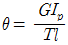
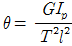
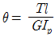
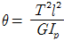
(정답률: 69%)
18. 다음 키의 종류 중 축은 가공하지 않고 보스에만 키 홈을 가공 하는 키는?
- 안장 키
- 묻힘 키
- 미끄럼 키
- 둥근 키
(정답률: 66%)
19. 다음 중 마찰차의 일반적인 특징에 관한 설명으로 옳지 않은 것은?
- 일정한 속도비를 얻기 어렵다.
- 기어 장치보다도 큰 회전력을 전달할 수 있다.
- 무단변속기구로도 이용할 수 있다.
- 과부하의 경우 안전장치의 역할을 할 수 있다.
(정답률: 53%)
20. 둥근 축에 작용하는 굽힘모멘트가 3000Nㆍmm이고, 축의 허용 굽힘응력이 10N/mm2 일 때 축의 바깥지름은 약 몇 mm 이상이어야 하는가?
- 7.4 mm
- 13.2 mm
- 14.5 mm
- 55.3 mm
(정답률: 39%)
2과목: 자동차엔진
21. LPG 연료장치의 베이퍼라이저에 대한 설명 중 틀린 것은?
- 수온스위치 : 베이퍼라이저로 순환하는 냉각수 온도를 감지한다.
- 1차 감압실 : 대기압에 가깝게 감압하는 역할을 한다.
- 기동 솔레노이드 밸브 : 냉간 시동 시 추가적인 연료가 필요할 때 작동한다.
- 부압실 : 기관의 시동을 정지할 때 LPG 누출을 방지한다.
(정답률: 61%)
22. 다음 중 윤활유 첨가제가 아닌 것은?
- 부식 방지제
- 유동성 강화제
- 극압 윤활제
- 인화점 강하제
(정답률: 76%)
23. 가솔린 기관에서 사용되는 연료의 구비조건이 아닌 것은?
- 체적 및 무게가 적고 발열량이 클 것
- 연소 후 유해 화합물을 남기지 말 것
- 착화온도가 낮을 것
- 옥탄가가 높을 것
(정답률: 78%)
24. 기관의 기계효율을 향상시키기 위한 방법으로 거리가 먼 것은?
- 냉각팬, 오일펌프 등을 경량화 한다.
- 윤활장치를 개선하여 완전한 유막형성이 되게 한다.
- 운동부의 관성을 줄이기 위해 실린더수를 줄인다.
- 흡ㆍ배기 장치의 정밀가공을 통해 흡ㆍ배기 저항을 줄인다.
(정답률: 83%)
25. 다음 그림은 스로틀 포지션 센서(TPS)의 내부회로도이다. 스로틀 밸브가 그림에서 B와 같이 닫혀 있는 현재 상태의 출력전압은 약 몇 V인가? (단, 공회전 상태이다.)
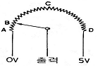
- 0 V
- 약 0.5 V
- 약 2.5 V
- 약 5 V
(정답률: 84%)
26. LPG가 가솔린에 비해 유해배출가스가 적게 나오는 이유는? (단, 공연비는 동일 조건일 경우)
- 탄소원자의 수가 적기 때문에
- 탄소원자의 수가 많기 때문에
- 수소원자의 수가 많기 때문에
- 수소원자의 수가 적기 때문에
(정답률: 76%)
27. LPI 기관의 연료라인 압력이 봄베 압력보다 항상 높게 설정되어 있는 이유로 옳은 것은?
- 공연비 피드백 제어
- 연료의 기화 방지
- 공전속도 제어
- 정확한 듀티 제어
(정답률: 68%)
28. 실린더의 지름이 100mm, 행정이 100mm일 때 압축비가 17:1 이라면 연소실 체적은?
- 약 29 cc
- 약 49 cc
- 약 79 cc
- 약 109 cc
(정답률: 57%)
29. 전자제어 가솔린기관에서 고속운전 중 스로틀밸브를 급격히 닫을 때 연료 분사량을 제어하는 방법은?
- 분사량 증가
- 분사량 감소
- 분사 일시 중단
- 변함 없음
(정답률: 80%)
30. 일반적인 자동차 기관의 흡기 밸브와 배기 밸브의 크기를 비교한 것으로 옳은 것은?
- 흡기밸브와 배기밸브의 크기는 동일하다.
- 흡기밸브가 더 크다.
- 배기밸브가 더 크다.
- 1번과 4번 배기밸브만 더 크다.
(정답률: 76%)
31. 운행차의 정밀검사에서 배출가스검사 전에 받는 관능 및 기능검사 의 항목이 아닌 것은?
- 타이어의 규격
- 냉각수가 누설되는지 여부
- 엔진, 변속기 등에 기계적인 결함이 있는지 여부
- 연료증발가스 방지장치의 정상작동 여부
(정답률: 77%)
32. 전자제어 기관에서 연료 차단(fuel cut)에 대한 설명으로 틀린 것은?
- 인젝터 분사신호를 정지한다.
- 배출가스 저감을 위함이다.
- 연비를 개선하기 위함이다.
- 기관의 고속회전을 위한 준비단계이다.
(정답률: 79%)
33. 전자제어기관에서 포텐셔미터식 스로틀포지션센서의 기본 구조 및 출력 특성과 가장 유사한 것은?
- 차속 센서
- 크랭크 각 센서
- 노킹 센서
- 액셀러레이터 포지션 센서
(정답률: 78%)
34. 가솔린 기관의 노크 방지법으로 틀린 것은?
- 화염전파 거리를 짧게 한다.
- 화염전파 속도를 빠르게 한다.
- 냉각수 및 흡기 온도를 낮춘다.
- 혼합 가스에 와류를 없앤다.
(정답률: 66%)
35. 윤활유의 점도에 관한 설명으로 가장 거리가 먼 것은?
- 점도지수가 높을수록 온도변화에 따른 점도변화가 많다.
- 점도는 끈적임의 정도를 나타내는 척도이다.
- 압력이 상승하면 점도는 높아진다.
- 온도가 높아지면 점도가 저하된다.
(정답률: 58%)
36. 전자제어 연료분사장치에서 기본 분사량의 결정은 무엇으로 결정 하는가?
- 냉각 수온 센서
- 흡입공기량 센서
- 공기온도 센서
- 유온 센서
(정답률: 85%)
37. 회전력이 20kgfㆍm 이고, 실린더 내경이 72 mm, 행정이 120 mm 인 6 기통 기관의 SAE 마력은 얼마인가?
- 약 12.9 PS
- 약 129 PS
- 약 19.3 PS
- 약 193 PS
(정답률: 51%)
38. 4행정 사이클, 4실린더 기관을 65ps로 30분간 운전시켰더니 연료 가 10ℓ 소모되었다. 연료의 비중이 0.73, 저위발열량이 11000kcal/kg 이라고 하면 이 기관의 열효울은 몇 %인가? (단, 1마력당 1시간당의 일량은 632.5kcal 이다.)
- 약 23.6%
- 약 24.6%
- 약 25.6%
- 약 51.2%
(정답률: 46%)
39. 오실로스코프를 이용한 자석식 크랭크 앵글 센서의 전압파형 분석 에 대한 설명 중 틀린 것은?
- 오실로스코프의 전압은 교류(AC)로 선택하여 점검한다.
- 기관 회전이 빨라질수록 발생 전압은 높아진다.
- 에어갭이 작아질수록 발생전압은 높아진다.
- 전압파형은 디지털 방식으로 표출된다.
(정답률: 55%)
40. 자동차 기관에서 발생되는 유해가스 중 블로바이가스의 주성분은 무엇인가?
- CO
- HC
- NOX
- SO
(정답률: 74%)
3과목: 자동차섀시
41. 장기 주차 시 차량의 하중에 의해 타이어에 변형이 발생하고, 차량이 다시 주행하게 될 때 정상적으로 복원되지 않는 현상은?
- Hysteresis 현상
- Heat separation 현상
- Run flat 현상
- Flat spot 현상
(정답률: 67%)
42. 자동차 종감속 장치에 일반적으로 사용되는 기어 형식이 아닌 것 은?
- 스퍼 기어
- 스크루 기어
- 하이포이드 기어
- 스파이럴 베벨 기어
(정답률: 54%)
43. 공주거리에 대한 설명으로 맞는 것은?
- 정지거리에서 제동거리를 뺀 거리
- 제동거리에서 정지거리를 더한 거리
- 정지거리에서 제동거리를 나눈 거리
- 제동거리에서 정지거리를 곱한 거리
(정답률: 71%)
44. 차체자세제어장치(VDC : vehicle dynamic control)장착 차량의 스티어링 각 센서에 대한 두 정비사의 의견 중 옳은 것은?
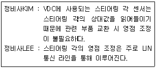
- 정비사KIM만 옳다.
- 정비사LEE만 옳다.
- 두 정비사 모두 틀리다.
- 두 정비사 모두 옳다.
(정답률: 55%)
45. 조향 핸들을 2바퀴 돌렸을 때 피트먼 암이 90° 움직였다. 조향 기어비는?
- 6 : 1
- 7 : 1
- 8 : 1
- 9 : 1
(정답률: 78%)
46. 조향축의 설치 각도와 길이를 조절할 수 있는 형식은?
- 랙 기어 형식
- 틸트 형식
- 텔레스코핑 형식
- 틸트 앤드 텔레스코핑 형식
(정답률: 67%)
47. 동력조향장치에서 조향핸들을 회전시킬 때 기관의 회전속도를 보상시키기 위하여 ECU로 입력되는 신호는?
- 인히비터 스위치
- 파워스티어링 압력 스위치
- 전기부하 스위치
- 공전속도 제어 서보
(정답률: 69%)
48. 유체 클러치에서 스톨 포인트에 대한 설명이 아닌 것은?
- 속도비가 “0”인 점이다.
- 펌프는 회전하나 터빈이 회전하지 않는 점이다.
- 스톨 포인트에서 토크비가 최대가 된다.
- 스톨 포인트에서 효율이 최대가 된다.
(정답률: 57%)
49. 후륜구동 차량의 종감속 장치에서 구동피니언과 링기어 중심선이 편심되어 추진축의 위치를 낮출 수 있는 것은?
- 베벨 기어
- 스퍼 기어
- 웜과 웜 기어
- 하이포이드 기어
(정답률: 70%)
50. 금속분말을 소결시킨 브레이크 라이닝으로 열전도성이 크며 몇 개 의 조각으로 나누어 슈에 설치된 것은?
- 위븐 라이닝
- 메탈릭 라이닝
- 몰드 라이닝
- 세미 메탈릭 라이닝
(정답률: 66%)
51. 브레이크 푸시로드의 작용력이 62.8 kgf 이고 마스터실린더의 내경이 2cm일 때 브레이크 디스크에 가해지는 힘은?(단,휠 실린더의 면적은 3cm제곱 이다.)
- 약 40 kgf
- 약 60 kgf
- 약 80 kgf
- 약 100 kgf
(정답률: 49%)
52. 차체자세제어장치(VDC : vehicle dynamic control) 시스템에서 고장 발생 시 제어에 대한 설명으로 틀린 것은?
- 원칙적으로 ABS시스템 고장 시에는 VDC시스템 제어를 금지한다.
- VDC시스템 고장 시에는 해당 시스템만 제어를 금지한다.
- VDC시스템 고장으로 솔레노이드 밸브 릴레이를 OFF시켜야 되는 경우에는 ABS의 페일 세이프에 준한다.
- VDC시스템 고장 시 자동변속기는 현대 변속단보다 다운 변속된다.
(정답률: 59%)
53. 4륜 구동방식(4WD)의 특징으로 거리가 먼 것은?
- 등판 능력 및 견인력 향상
- 조향 성능 및 안전성 향상
- 고속 주행 시 직진 안전성 향상
- 연료소비율 낮음
(정답률: 84%)
54. 현가장치에서 드가르봉식 쇼크 업소버의 설명으로 가장 거리가 먼 것은?
- 질소가스가 봉입되어 있다.
- 오일실과 가스실이 분리되어 있다.
- 오일에 기포가 발생하여도 충격 감쇠효과가 저하하지 않는다.
- 쇼크 업소버의 작동이 정지되면 질소가스가 팽창하여 프리 피스톤의 압력을 상승시켜 오일 챔버의 오일을 감압한다.
(정답률: 52%)
55. 자동변속기에서 유성기어 장치의 3요소가 아닌 것은?
- 선 기어
- 캐리어
- 링 기어
- 베벨 기어
(정답률: 78%)
56. 인터널 링기어 1개, 캐리어 1개, 직경이 서로 다른 선기어 2개, 길이가 서로 다른 2세트의 유성기어를 사용하는 유성기어정치는?
- 2중 유성기어 장치
- 평행 축 기어 장치
- 라비뇨(ravigneaux) 기어 장치
- 심프슨(simpson) 기어 장치
(정답률: 62%)
57. ABS(Anti-lock Brake System)의 구성부품으로 볼 수 없는 것은?
- 일렉트로닉 컨트롤 유닛
- 휠 스피드 센서
- 하이드로닉 유닛
- 크랭크 앵글센서
(정답률: 76%)
58. 전자제어식 현가장치(ECS: electronic control suspension system)의 입력 요소가 아닌 것은?
- 냉각수온 센서
- 차속 센서
- 스로틀 위치 센서
- 앞ㆍ뒤 차고 센서
(정답률: 74%)
59. 기관에서 발생한 토크와 회전수가 각각 80 kgfㆍm, 1000 rpm, 클러치를 통과하여 변속기로 들어가는 토크와 회전수가 각각 60gkfㆍm, 900 rpm일 경우 클러치의 전달효율은 약 얼마인가?
- 37.5%
- 47.5%
- 57.5%
- 67.5%
(정답률: 41%)
60. 앞바퀴 구동 승용차에서 드라이브 샤프트는 변속기 측과 차륜 측에 각각 1개의 조인트로 연결되어 있다. 변속기 측 조인트의 명칭은?
- 더블 오프셋 조인트(double offset joint)
- 버필드 조인트(birfield joint)
- 유니버셜 조인트(universal joint)
- 플렉시블 조인트(flexible joint)
(정답률: 55%)
4과목: 자동차전기
61. 컴퓨터의 논리회로에서 논리적(AND)에 해당되는 것은?
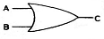
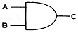
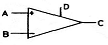
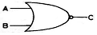
(정답률: 78%)
62. 완전 충전 상태 인 100 Ah 배터리를 20 A의 전류로 얼마 동안 사용할 수 있는가?
- 50분
- 100분
- 150분
- 300분
(정답률: 63%)
63. 마그네틱 인덕티브 방식 휠 스피드센서의 정상작동 여부를 가장 정확하게 판단할 수 있는 것은?
- 디지털 멀티미터
- 아날로그 멀티미터
- 오실로스코프
- LED 테스트 램프
(정답률: 76%)
64. 자동차 에어컨에서 고온 고압의 기체 냉매를 액화시켜 냉각시키는 역할을 하는 것은?
- 압축기
- 응축기
- 팽창밸브
- 증발기
(정답률: 74%)
65. 자동차에서 무선시스템에 간섭을 일으키는 전자기파를 방지하기 위한 대책이 아닌 것은?
- 커패시터와 같은 여과소자를 사용하여 간섭을 억제한다.
- 불꽃 발생원에 배터리를 직렬로 접속하여 고주파 전류를 흡수한다.
- 불꽃 발생원의 주위를 금속으로 밀봉하여 전파의 방사를 방지한다.
- 점화케이블의 심선에 고저항 케이블을 사용한다.
(정답률: 65%)
66. 기관의 상태에 따른 점화 요구전압, 점화시기, 배출가스에 대한 설명중 틀린 것은?
- 질소산화물(NOX)은 점화시기를 진각함에 따라 증가한다.
- 탄화수소(HC)는 점화시기를 진각함에 따라 감소한다.
- 연소실의 혼합비가 희박할수록 점화 요구 전압은 높아져야 한다.
- 실린더 압축 압력이 높을수록 점화 요구 전압도 높아져야 한다.
(정답률: 49%)
67. 하이브리드 자동차의 보조 배터리가 방전으로 시동 불량일 때 고장원인 또는 조치방법에 대한 설명으로 틀린 것은?
- 단시간에 방전이 되었다면 암전류 과다 발생이 원인이 될 수도 있다.
- 장시간 주행 후 바로 재시동시 불량하면 LDC 불량일 가능성이 있다.
- 보조 배터리가 방전이 되었어도 고전압 배터리로 시동이 가능하다.
- 보조 배터리를 점프 시동하여 주행 가능하다.
(정답률: 68%)
68. 하이브리드 자동차의 전기장치 정비 시 반드시 지켜야 할 내용이 아닌 것은?
- 절연장갑을 착용하고 작업한다.
- 서비스플러그(안전플러그)를 제거한다.
- 전원을 차단하고 일정 시간이 경과 후 작업한다.
- 하이브리드 컴퓨터의 커넥터를 분리하여야 한다.
(정답률: 77%)
69. 포토 다이오드에 대한 설명으로 틀린 것은?
- 응답속도가 빠르다.
- 주변의 온도변화에 따라 출력 변화에 영향을 많이 받는다.
- 빛이 들어오는 광량과 출력되는 전류의 직진성이 좋다.
- 자동차에서는 크랭크 각 센서, 에어컨의 일사센서 등에 사용된다.
(정답률: 67%)
70. 자동차 기동전동기 전기자 시험기로 시험할 수 없는 것은?
- 코일의 단락
- 코일의 접지
- 코일의 단선
- 코일의 저항
(정답률: 74%)
71. 자기인덕턴스가 0.7 H 인 코일에 흐르는 전류가 0.01초 동안 4 A의 전류로 변화하였다면, 이 때 발생하는 기전력은?
- 240 V
- 260 V
- 280 V
- 300 V
(정답률: 68%)
72. 연료탱크에 연료가 가득 차 있는데 연료경고등(NTC)이 점등 될 수 있는 요인으로 옳은 것은?
- 퓨즈의 단선
- 서미스터의 결함
- 경고등 접지선의 단선
- 경고등 전원선의 단선
(정답률: 72%)
73. 에어백 컨트롤 유닛의 점검 사항에 속하지 않는 것은?
- 시스템 내의 구성부품 및 배선의 단선, 단락 진단
- 부품에 이상이 있을 때 경고등 점등
- 전기 신호에 의한 에어백 팽창 여부
- 시스템에 이상이 있을 때 경고등 점등
(정답률: 74%)
74. 에어백 인플레이터(inflator)의 역할에 대한 설명으로 옳은 것은?
- 에어백의 작동을 위한 전기적인 충전을 하여 배터리가 없을 때에도 작동시키는 역할을 한다.
- 점화장치, 질소가스 등이 내장되어 에어백이 작동할 수 있도록 점화 역할을 한다.
- 충동할 때 충격을 감지하는 역할을 한다.
- 고장이 발생하였을 때 경고등을 점등한다.
(정답률: 73%)
75. 차량에서 12V배터리를 떼어 내고 절연체의 저항을 측정하였더니 1 MΩ이었다면 누설전류는?
- 0.006 mA
- 0.008 mA
- 0.010 mA
- 0.012 mA
(정답률: 70%)
76. 점화스위치를 ON(IG1)했을 때 발전기 내부에서 자화되는 것은?
- 로터
- 스테이터
- 정류기
- 전기자
(정답률: 54%)
77. 자동차 트립 컴퓨터 화면에 표시되지 않는 것은?
- 평균연비
- 주행 가능 거리
- 주행 시간
- 배터리 충전 전류
(정답률: 77%)
78. 자동차 계기장치의 표시사항이 아닌 것은?
- 냉각수 온도
- 주행 중 연료 누설
- 충전 경고
- 기관 회전 속도
(정답률: 73%)
79. 냉매(R-134a)의 구비조건으로 옳은 것은?
- 비등점이 적당히 높을 것
- 냉매의 증발 잠열이 작을 것
- 응축 압력이 적당히 높을 것
- 임계 온도가 충분히 높을 것
(정답률: 59%)
80. IC 조정기 부착형 교류발전기에서 로터코일 저항을 측정하는 단자는?(단, IG : ignition, F : field, L : lamp, B : battery, E : earth)
- IG단자와 F단자
- F단자와 E단자
- B단자와 L단자
- L단자와 F단자
(정답률: 56%)